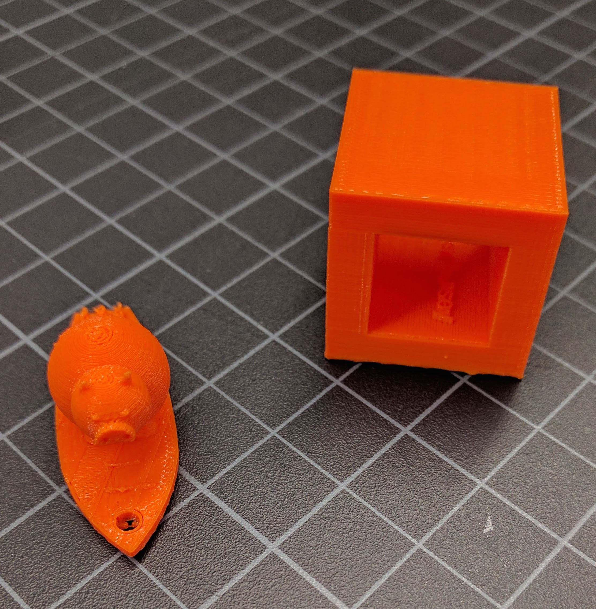

When working with the makerbot, there are a few things to keep in mind. Firstly, The print area for the replicator+ is 11.6 X 7.6 X 6.5 inches, which although is considered large, is a limitation. Since our 3D printers use Fused deposition modeling they cannot create overhang so therefore need to generate supports. These supports can often times get in the way and lower the quality of the print. Lastly, the smaller the print is, the harder it is for the makerbot to print.
With meshmixer I combined a surfboard and a pig, both of which I got off of Thingiverse. I was surpised with how easy it was to edit each stl file, although what I was doing was pretty simple. Once I downloaded both of the files, I loaded them into meshmixer and began positioning them. After I moved the pig ontop of the surfboard, I combined both the stl fileds making them one. And it was that easy, All I had to do next was to print.
Creating an object that could be 3D printed, but not milled, was fairly easy. I created a hollow cube and extruded my name up on one of the inside sides. Even with a rotary attachment, it is hard for mills to cut fine details in constrained spaces. However, it is easy for a 3D printer because it builds from the bottom up layer by layer.